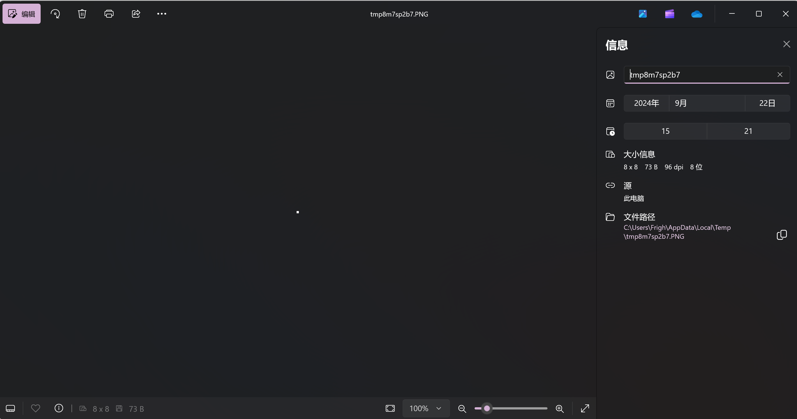
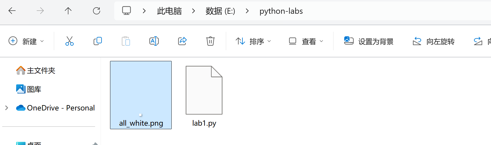

基于 NumPy 与 Pillow 的图像创建和基本变换
实验目的
- 了解 Pillow 库在图像保存和显示中的作用。
- 学习如何将 NumPy 数组转换为图像文件，并观察结果。
- 探索图像变换：通过修改图像的不同部分（如颜色、形状等）来观察图像的变化。
实验环境
- Python 3.x 环境
- Pillow（PIL）库
- NumPy 库
实验步骤
库安装和引入
如果你尚未安装 NumPy 和 Pillow，可以参照环境配置指南中的指导进行安装. 在自行编写的 Python 脚本顶部输入
import numpy as np
from PIL import Image
以在本实验中使用这两个库.
关于 import 指令
一般地，我们使用 import 指令引入一个库. 直接使用
import os
的指令时，使用其中的函数要使用成员操作符 .，例如 os.system() 就能执行 os 模块中的 system 函数. 在本实验中，我们用到了两种特殊的语法：其一是 import numpy as np，它可以用来简化模块名，例如下面我们会使用 np.ones() 而非 numpy.ones()；另一是 from PIL import Image，它使得我们可以不带前缀地引用某个对象或是子模块，例如我们要如此使用 Pillow 库的 Image 子模块而不能通过 PIL.Image 的方式使用. 也可以使用from numpy import ones 以直接使用 ones(). 有兴趣的读者可以尝试各种引入方式，其结果应当是一致的——比如说你也可以把 numpy 缩写成 npy.
但是，在有的地方你可能会看到 from ... import * 的语法. 这种形式相当于将某个包中的所有变量都引入. 这在通常情况下是不建议的操作，尤其是对于第三方库，因为它会污染命名空间，有可能对我们的程序的可读性和调试的过程有负面影响.
图片的创建、打开和保存
接下来，我们使用 np.ones() 函数创建一个数组. 可以直接使用
arr = np.ones((8, 8), dtype=np.uint8) * 255
创建一个整数类型，值全为 255，形状为 8*8 的二维数组.
NumPy 中的数据类型
粗略地，可以将 NumPy 中的数据类型视作一个数组. 它有一个形状 shape 表示它的维数，是一个元组；有一个类型 dtype 标识其中元素的类型. 可以通过 arr.shape 和 arr.dtype 输出这两个参数.
我们使用 np.ones() 函数创建了一个元素全为 1 的二维数组，其形状就是传入的参数 (8, 8)，类型设置为 np.uint8 表示类型为 8 位无符号整数. 回忆一下，它能表示的最大范围是多少？
接下来，我们使用 * 运算符对其中的每个参数都乘了 255，也就是二进制的 11111111. 读者可输出这个数组的值进行观察.
可以通过 Pillow 库将数组转化为图像，并打开：
img = Image.fromarray(arr)
img.show()
你会发现，弹出了一个图片浏览器窗口，并且其中出现了一个很小的白框框. 查看文件属性发现，它确实是一个 8*8 大小的图片：

再执行：
img.save('all_white.png')
你会发现在代码的同级目录下出现了一个图片文件，如下图：

关于保存路径和文件名
首先，最重要的事情，请保存你的代码文件！请保存你的代码文件！请保存你的代码文件！
注意，一般情况下，代码文件应该放在你具备完全读写文件的文件夹下，否则有可能导致 OSError 的报错. 如果出现类似的报错，请注意你的文件路径是否具备足够的权限.
在这里，我们以相对路径的方式进行文件写操作. 实际上，你也可以以绝对路径（即盘符开头的路径）进行写操作. 相对路径与绝对路径的区别在于，它是从代码被执行的当前路径出发去寻找合适的保存位置的. 这使得它往往更加简短，也更加灵活.
图片的修改
NumPy 的数组支持对单个元素进行修改，其取元素的方法就是 [] 运算符. 因为这是一个二维数组，所以执行
arr[2][2] = 128
可以将 (2, 2) 的位置改成 128. 注意，数组的下标是从 0 开始的，所以可行的下标只有 0 ~ 7（或负数 -8 ~ -1，与数组类似地），越界的下标将会出现如下报错：
Traceback (most recent call last):
File "E:\python-labs\lab1.py", line 5, in <module>
arr[8][0] = 128
IndexError: index 8 is out of bounds for axis 0 with size 8
报错的含义是直接的. 接下来，请读者自行修改 arr 的值来改变图像的内容，绘出更为丰富的图形. 你可以将数组的值修改为 0 ~ 255 之间的任意整数，以观察其颜色的变化.
关于放大
在图像查看中观看图像时，我们会发现图像变得有些模糊. 这是因为图像查看器对图像做了插值操作（interpolation）. 这不会影响图像的真实样貌，可以放心.
到目前为止，我们的代码应当如下所示：
import numpy as np
from PIL import Image
arr = np.ones((8, 8), dtype=np.uint8) * 255
# 你需要修改的部分是从这里开始
# 到这里为止
img = Image.fromarray(arr)
img.save("pic1.png") # 记得保存图片时修改文件名
img.show()
现在，带着这段代码开始随意玩耍吧. 不要害怕报错，每一个报错都是学习的机会. 你可以尝试绘制更大的图形，甚至尝试画出彩色图像. 当然，这些也都可以写入你的实验心得当中一并提交.
提交方式
我们希望你提交以下内容：
- 实验代码，
py类型的文件，可以有多个. - 实验结果，即运行之后的图像，
png或者jpg类型等等常见的图片类型均可. - 实验报告，包含对自己的代码的解释、结果分析，以及过程中遇上的报错和任何遇到的好玩的问题，以及在查资料的时候发现的有趣的知识，以
pdf类型文件提交.
一般地，只需要提交一个 zip 文件即可. 你也可以尝试：
- 修改代码中保存文件的路径，进而整理文件结构，代码、运行结果和文档分开.
- 使用 Jupyter Notebook，提交整合的
ipynb类型文件. - 你也可以将你的尝试写成博客，发布到网上，然后提交可公开访问的链接.
作为一门编程语言类的课程，我们鼓励同学进行多种多样的尝试，因此，基于原始代码和功能之上的任何改动都是允许且被鼓励的. 但是，为了避免无意义的内卷，只需要完成基础功能、认真写完报告就能获得最高的分数，因此也不必勉强自己，尽情享受完成代码、修改代码的过程吧！